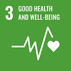

RESEARCH

Goal 3: Good health and well-being
2025
Kim, Yejin; Park, Seohui; Choi, Hyunyoung; Im, Jungho
JOURNAL OF HAZARDOUS MATERIALS, Volume 488, 137369



Kim, Yejin; Park, Seohui; Choi, Hyunyoung; Im, Jungho
JOURNAL OF HAZARDOUS MATERIALS, Volume 488, 137369